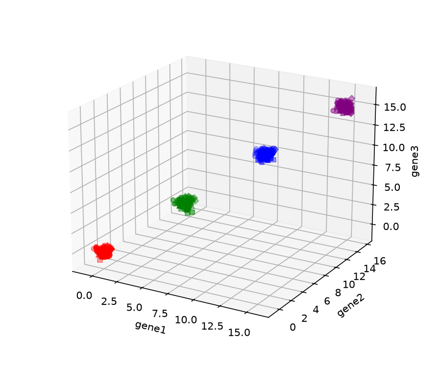
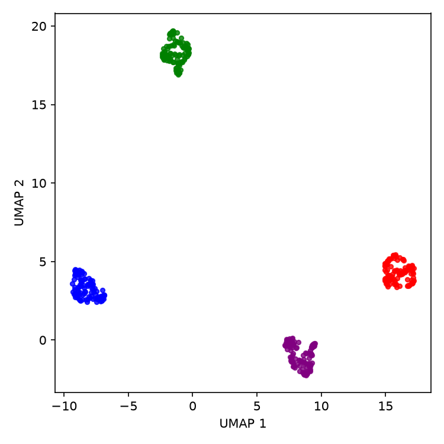
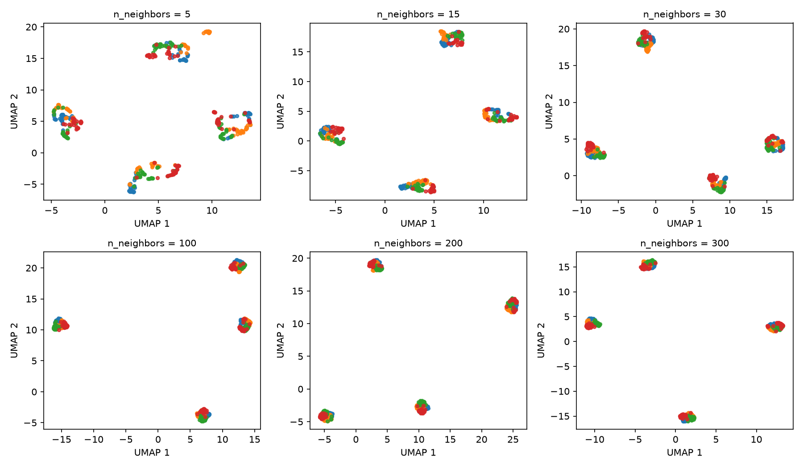
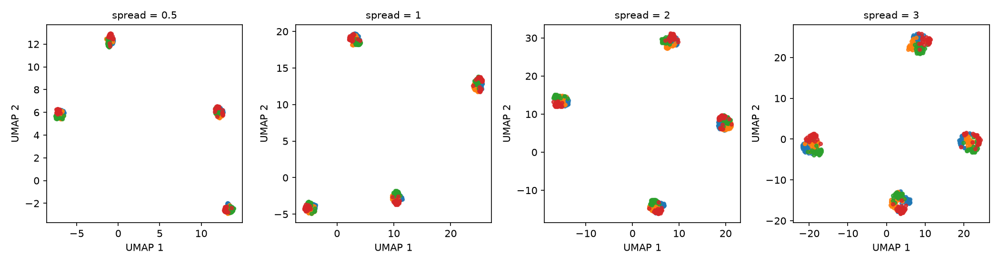
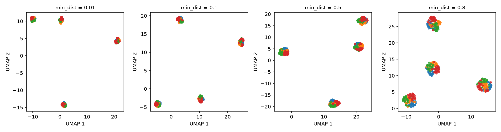
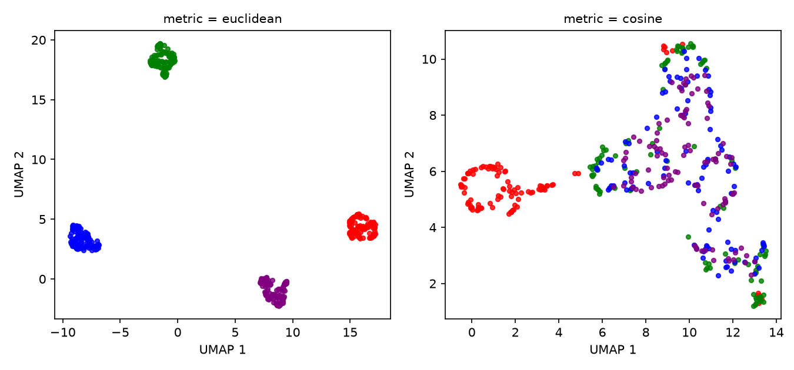

3 UMAP in Python
This chapter introduces a practical UMAP workflow with umap-learn. Install it with pip install umap-learn. The examples were tested with umap-learn 0.5.12 and use numpy, pandas and matplotlib for data handling and plotting.
from umap import UMAPWe will use simulated data with four well-separated main groups. Each group contains points generated around four nearby centers in three variables (gene1, gene2, gene3). Because the group labels are known, we can use them after fitting UMAP to check what the embedding preserves.
import numpy as np
import pandas as pd
rng = np.random.default_rng(123)
main_cluster_centers = np.array([[0, 0, 0], [5, 5, 5], [10, 10, 10], [15, 15, 15]])
subcluster_offsets = np.array(
[[-0.25, -0.25, 0.25], [0.25, -0.25, -0.25], [-0.25, 0.25, -0.25], [0.25, 0.25, 0.25]]
)
rows = []
for cluster_idx, center in enumerate(main_cluster_centers):
for subcluster_idx, offset in enumerate(subcluster_offsets):
sub_center = center + offset
genes = rng.normal(loc=sub_center, scale=0.25, size=(25, 3))
for gene1, gene2, gene3 in genes:
rows.append(
{"gene1": gene1, "gene2": gene2, "gene3": gene3,
"cluster": cluster_idx, "subcluster": subcluster_idx}
)
data = pd.DataFrame(rows)
print(data.shape)(400, 5)The large separation between the four main centers is visible in the original three-dimensional data. The marker shapes show the nearby generating centers within each group; their distributions overlap, so they are a much harder structure to resolve.

3.1 Fit a two-dimensional embedding
The main inputs and settings are:
X: a numeric array with samples in rows and variables in columns;n_components: the number of embedding dimensions (two by default); andn_neighbors: the number of nearby observations used to construct each local neighborhood. Smaller values emphasize more local relationships, while larger values incorporate a broader neighborhood.
Create a UMAP object, then call fit_transform. Setting random_state makes this run reproducible.
X = data[["gene1", "gene2", "gene3"]].to_numpy()
reducer = UMAP(n_neighbors=30, random_state=42)
embedding = reducer.fit_transform(X)
print(embedding.shape)(400, 2)fit_transform returns a NumPy array with one row per sample and one column per embedding dimension.
import matplotlib.pyplot as plt
colors = {0: "red", 1: "green", 2: "blue", 3: "purple"}
fig, ax = plt.subplots(figsize=(5, 5))
for cluster, idx in data.groupby("cluster").groups.items():
pos = data.index.get_indexer(idx)
ax.scatter(embedding[pos, 0], embedding[pos, 1], c=colors[cluster], s=12)
ax.set_xlabel("UMAP 1")
ax.set_ylabel("UMAP 2")
n_neighbors = 30, colored by the known main-group labels.
The four known groups occupy separate regions of the embedding. This is a basic check against the simulation labels, not evidence that UMAP independently established four populations. The groups were deliberately generated far apart relative to their within-group variation.
3.2 Change the neighborhood size
The next plot repeats the fit across a range of n_neighbors values. Points are colored by their generating center within each main group so that we can also look for finer structure.
fig, axes = plt.subplots(2, 3, figsize=(12, 7))
for ax, nn in zip(axes.ravel(), [5, 15, 30, 100, 200, 300]):
reducer = UMAP(n_neighbors=nn, random_state=42)
embedding = reducer.fit_transform(X)
for subcluster, idx in data.groupby("subcluster").groups.items():
pos = data.index.get_indexer(idx)
ax.scatter(embedding[pos, 0], embedding[pos, 1], s=10)
ax.set_title(f"n_neighbors = {nn}")
ax.set_xlabel("UMAP 1")
ax.set_ylabel("UMAP 2")
n_neighbors values. Color indicates the four generating centers within each main group.
At n_neighbors = 5, some main groups break into narrow or disconnected pieces. With larger neighborhoods, each main group appears more compact in this example. The colors remain substantially mixed within the main groups, so these plots do not show a clean recovery of the four nearby generating centers. The changing locations and distances between the main groups should not be interpreted as changes in their separation in the original data.
3.3 Control point spacing
spread and min_dist jointly control the scale and packing of the embedding. To see the effect of spread, keep min_dist fixed and vary only spread.
fig, axes = plt.subplots(1, 4, figsize=(14, 3.7))
for ax, spr in zip(axes, [0.5, 1, 2, 3]):
reducer = UMAP(n_neighbors=200, min_dist=0.1, spread=spr, random_state=42)
embedding = reducer.fit_transform(X)
for subcluster, idx in data.groupby("subcluster").groups.items():
pos = data.index.get_indexer(idx)
ax.scatter(embedding[pos, 0], embedding[pos, 1], s=10)
ax.set_title(f"spread = {spr}")
ax.set_xlabel("UMAP 1")
ax.set_ylabel("UMAP 2")
spread, with min_dist fixed at 0.1.
Larger spread values give the embedding more room, so both the coordinate range and the extent of each group increase. UMAP coordinates have no fixed physical scale; a larger gap on these axes does not by itself mean that two groups are more different in the original data.
Now keep spread = 1 and vary min_dist.
fig, axes = plt.subplots(1, 4, figsize=(14, 3.7))
for ax, mind in zip(axes, [0.01, 0.1, 0.5, 0.8]):
reducer = UMAP(n_neighbors=200, min_dist=mind, spread=1, random_state=42)
embedding = reducer.fit_transform(X)
for subcluster, idx in data.groupby("subcluster").groups.items():
pos = data.index.get_indexer(idx)
ax.scatter(embedding[pos, 0], embedding[pos, 1], s=10)
ax.set_title(f"min_dist = {mind}")
ax.set_xlabel("UMAP 1")
ax.set_ylabel("UMAP 2")
min_dist, with spread fixed at 1.
Increasing min_dist reduces how tightly nearby points can pack in the embedding. The four main groups remain visible, but their internal density and shape change. Select these parameters for the structure you need to inspect, then check whether the relevant pattern persists across reasonable settings.
3.4 Choose a distance metric
The metric setting defines similarity in the input space. Euclidean distance uses absolute differences between variables. Cosine distance compares the direction of two vectors and is unchanged if an entire vector is multiplied by a positive constant. The appropriate choice depends on what differences are meaningful for the data.
fig, axes = plt.subplots(1, 2, figsize=(9, 4.2))
for ax, metric in zip(axes, ["euclidean", "cosine"]):
reducer = UMAP(n_neighbors=30, metric=metric, random_state=42)
embedding = reducer.fit_transform(X)
for cluster, idx in data.groupby("cluster").groups.items():
pos = data.index.get_indexer(idx)
ax.scatter(embedding[pos, 0], embedding[pos, 1], c=colors[cluster], s=12)
ax.set_title(f"metric = {metric}")
ax.set_xlabel("UMAP 1")
ax.set_ylabel("UMAP 2")
Euclidean distance separates the known groups more clearly for this simulation. The main groups differ largely in their distance from the origin, whereas cosine distance discards vector magnitude and emphasizes direction. This result is specific to how the data were generated, it is not a general ranking of the two metrics.